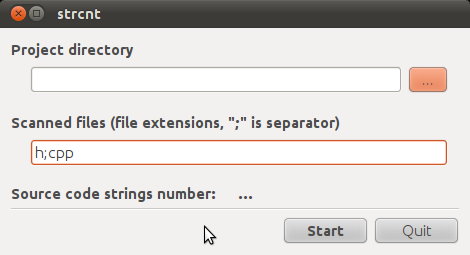

pa23
r49:
Страница проекта |
Загрузки |
Быстрый старт
Программный комплекс, предназначенный для расчета удельных выбросов вредных веществ
с отработавшими газами дизельных двигателей, испытываемых по стационарным циклам на
соответствие требованиям Правил ЕЭК ООН №49 Ревизия 1 и Ревизия 4, Правил ЕЭК ООН
№96 Ревизия 1, ОСТ 37.001.234-81, ГОСТ 17.2.2.05-97, ГОСТ 30574-98 и ГОСТ Р 51249-99
r49 является свободным программным обеспечением и состоит из библиотеки toxic и программы Qr49.
Программный комплекс написан на языке программирования C++ с использованием Qt.
Основные возможности:
- Расчет точек (значений частоты вращения коленчатого вала двигателя, крутящего момента, потерь мощности на привод вентилятора и т.д.) для всех стационарных испытательных циклов дизельных двигателей, описанных в приведенных выше нормативных документах.
- Расчет удельных выбросов вредных веществ с отработавшими газами по любому из стационарных испытательных циклов дизельных двигателей, описанных в приведенных выше нормативных документах.
- Расчет мощности двигателя, приведенной к нормальным атмосферным условиям (Правила ЕЭК ООН №85).
- "Свободный" расчет удельных выбросов по точкам цикла (напр., при снятии регулировочных характеристик, внешней скоростной характеристики и т.п.).
- Автоматическое создание каталога с исходными данными, конфигурацией, результатами и отчетами по завершению расчета.
- Использование программы Qr49 без загрузки графического интерфейса, что может быть востребовано, например, при пакетной обработке данных.
Дополнительные возможности:
- Использование в расчете крутящего момента брутто или мощности брутто при расчете мощности двигателя нетто.
- Использование в расчете "непосредственных" замеров расхода воздуха или рассчитываемых значений (при использовании во время испытаний измерительного сопла, согласно методике ЯМЗ).
- Обратный расчет относительно оксидов азота, т.е. возможность рассчитать концентрации оксидов азота, исходя из значений удельных выбросов для каждой точки испытательного цикла.
- Расчет степени рециркуляции отработавших газов, основываясь на замерах концентраций диоксида углерода в воздухе, поступающем в цилиндры двигателя, и в отработавших газах.
- Расчет коэффициента избытка воздуха с учетом рециркуляции отработавших газов.
- Оценка корректности замеров расхода воздуха двигателем, основываясь на замерах концентраций кислорода в отработавших газах.
- Использование в расчете выброса "твердых" частиц либо расхода разбавляющего воздуха, либо коэффициента разбавления.
- Предварительный расчет частот вращения коленчатого вала двигателя A, B и C для стационарных циклов с Евро-3 по Евро-6.
- Расчет дымности отработавших газов по испытательному циклу ELR.
- Импорт данных из сторонних файлов, полученных с помощью таких систем управления испытательными стендами как, например, AVL PUMA Open.
Ограничения:
- r49 предназначен для обработки результатов испытаний только дизельных двигателей.
- Расчет удельного выброса "твердых" частиц в r49 производится только для систем с частичным разбавлением и измерением потока.
Люди, внесшие вклад в проект ценными советами:
- Борис Романович Бланкштейн
- Евгений Константинович Шприц
- Алексей Иванович Атрохов
- Александр Малютин
- Андрей Кукушкин
- Дмитрий Епанешников
Скриншоты:


strcnt:
Страница проекта |
Загрузки
Определение числа непустых строк в текстовых файлах.
strcnt является свободным программным обеспечением,
программа написана на языке программирования C++ с использованием Qt.
Скриншоты:


github |
vkontakte |
facebook